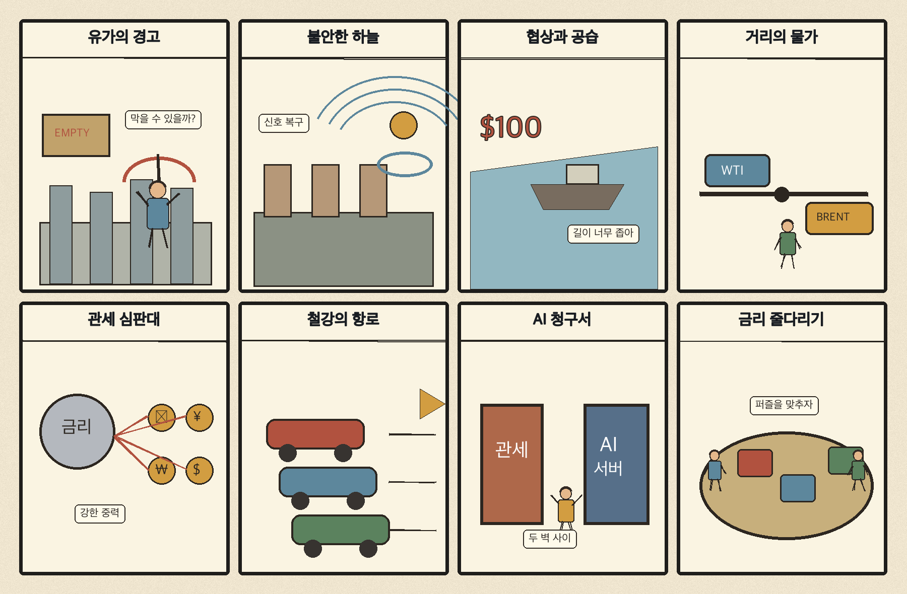
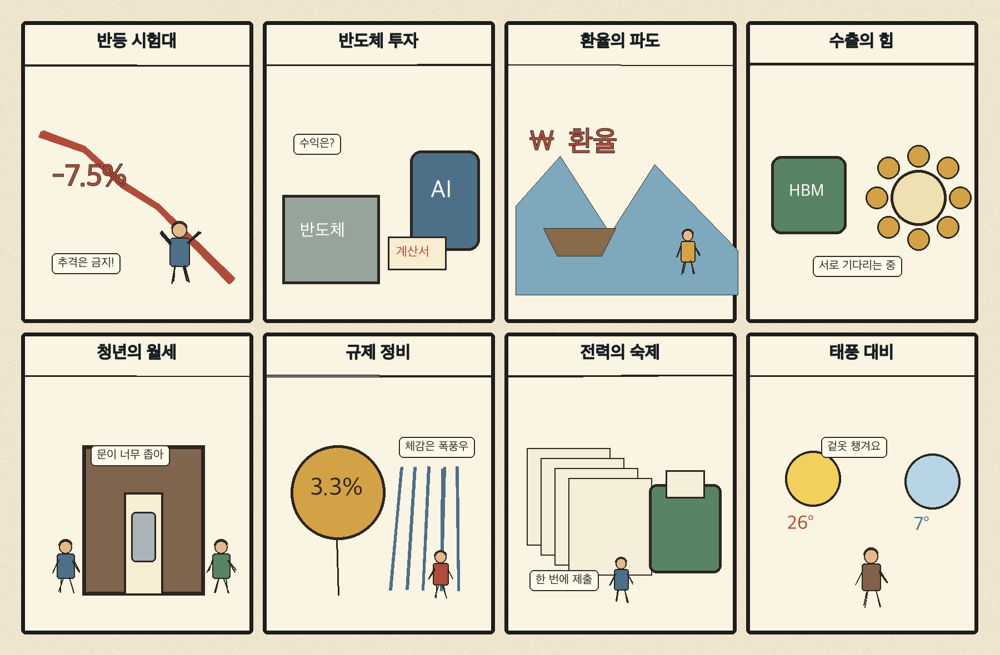

01
크라우드스트라이크 · 239.29→257.57달러 · +7.64%
내용요약 시가 대비 +8.00%로 조사 종목 중 가장 강했습니다. 당일 인공지능 기반 보안 수요 보도와 함께 사이버보안 업종의 상대강도가 두드러졌습니다.
예상여파 국내 보안주는 관심을 받을 수 있지만 미국 단일 종목 급등을 국내 실적 수혜로 곧바로 연결하지 말아야 합니다.
MORNING_BRIEFING_20261025
작성 시각: 2026-10-25 06:34 KST · 직전 미국 정규장과 2026-10-25 KST 당일 공개 기사 기준
직전 미국 정규장인 10월 23일 뉴욕증시는 다우 -1.23%, S&P 500 -0.52%, 나스닥 -0.21%로 하락했습니다. 중동 긴장과 고유가가 물가·금리 부담을 키운 흐름입니다. 한국 증시는 일요일 휴장입니다. 월요일에는 에너지 상대강도와 비용민감 업종의 압박, 외국인 현·선물 수급을 함께 확인해야 합니다.
| 지수 | 종가 | 등락률 | 한국 증시 시사점 |
|---|---|---|---|
| 다우존스 | 52,215.16 | -1.23% | 고유가·금리 부담과 경기민감주 약세 |
| S&P 500 | 7,623.68 | -0.52% | 에너지 강세와 기술주 선별 흐름 |
| 나스닥 종합 | 25,955.34 | -0.21% | 에너지 강세와 기술주 선별 흐름 |
고유가 충격이 경기민감주와 금리 기대를 압박했습니다.
사우디와 후티의 충돌이 유가·물류 위험을 높이고 있습니다.
금요일 시가 대비 +2.72%였지만 KOSDAQ은 전일 대비 -1.62%였습니다.
공식 추천 없이 월요일 시초가 갭과 수급 안정 여부를 준비합니다.
10월 24일 보고서는 토요일 휴장과 필수 수급·컨센서스·유사 조건 표본 부족으로 공식 추천을 내지 않았습니다. 사후에 종목을 추가하지 않습니다.
| 시장 | 종가 | 등락률 | 기준 |
|---|---|---|---|
| KOSPI | 5,550.30 | +0.30% | 10월 23일 · 시가 대비 +2.72% |
| KOSDAQ | 751.69 | -1.62% | 10월 23일 · 시가 대비 +0.45% |
| 다우존스 | 52,215.16 | -1.23% | 미국 10월 23일 정규장 |
| S&P 500 | 7,623.68 | -0.52% | 미국 10월 23일 정규장 |
| 나스닥 종합 | 25,955.34 | -0.21% | 미국 10월 23일 정규장 |
크라우드스트라이크가 시가 대비 +8.00%로 조사군 최상위였습니다.
다이아몬드백 +3.40%, 셰브론 +2.20%, 엑슨모빌 +2.14%가 올랐습니다.
코인베이스가 시가 대비 -2.11%로 위험자산 경계의 영향을 받았습니다.
슈퍼마이크로 -2.08%, 넷플릭스 -1.73%, 홈디포 -1.59%였습니다.
내용요약 시가 대비 +8.00%로 조사 종목 중 가장 강했습니다. 당일 인공지능 기반 보안 수요 보도와 함께 사이버보안 업종의 상대강도가 두드러졌습니다.
예상여파 국내 보안주는 관심을 받을 수 있지만 미국 단일 종목 급등을 국내 실적 수혜로 곧바로 연결하지 말아야 합니다.
내용요약 시가 대비 +3.40% 올랐습니다. 브렌트유 116달러대와 중동 공급 차질 우려 속 에너지 생산주가 강했습니다.
예상여파 정유·에너지 업종에는 단기 우호적이지만 유가 급등 뒤 변동성과 정책 대응을 경계해야 합니다.
내용요약 시가 대비 +2.20% 상승하며 국제유가 급등의 수혜를 반영했습니다.
예상여파 에너지 대형주의 상대강도는 이어질 수 있으나 고유가가 시장 전체에는 비용·금리 부담이라는 점을 함께 봐야 합니다.
내용요약 시가 대비 -2.11% 하락했습니다. 고유가와 국채금리 경계로 위험자산 선호가 약해진 흐름과 맞물렸습니다.
예상여파 암호자산 관련주는 주말에도 가격이 움직이므로 다음 거래일 갭 위험을 특히 경계해야 합니다.
내용요약 시가 대비 -2.08% 하락해 인공지능 서버주 안에서도 선별과 차익실현이 이어졌습니다.
예상여파 국내 서버·부품주는 인공지능 기대만으로 동조화하기보다 주문·마진·재고 지표를 확인해야 합니다.
일요일로 한국 증시는 휴장입니다. 미국장에서 에너지주는 강했지만 주요 지수는 하락했고, 주말 들어 사우디와 후티의 충돌이 기반시설 위험으로 번지고 있습니다. 월요일에는 정유·에너지의 상대강도와 항공·운송·화학·소비의 비용 부담이 엇갈릴 수 있습니다. 국제유가와 원·달러 움직임에 따라 시초가 갭이 커질 수 있으므로 장전 급등 종목 추격보다 외국인 현·선물 수급과 시가 안정 여부를 먼저 확인합니다.
오늘은 추천 없음 — 현금 관망
일요일 휴장으로 당일 시가 진입과 1일 수익률을 검증할 수 없습니다. 또한 전일까지의 외국인·기관 수급, 컨센서스 변화와 30건 이상 유사 조건 표본을 함께 확보해 종합점수 75점·상승확률 60%·예상 손익비 1.5를 모두 검증한 종목이 없습니다.
관심 연결종목 전력반도체·원전·정유는 관찰 대상일 뿐 매수 추천이 아닙니다. 월요일 장전 급등 또는 갭 상승 종목의 추격매수를 금지합니다.
사우디 기반시설 위협과 주말 공급 차질 뉴스를 확인합니다.
유가발 물가 압력이 통화정책 기대를 어떻게 바꾸는지 봅니다.
에너지 강세와 비용민감 업종 약세가 과도한지 점검합니다.
제주·남부의 강한 비, 항공·선박과 농작물 피해에 대비합니다.
핵심 요약: 인공지능 인프라 경쟁이 연산칩에서 800V 전력변환, 원전·전력망, 대규모 데이터센터로 확장되고 있습니다. 투자 규모만큼 실제 전력 확보와 수익성, 규제 대응이 중요합니다.
내용요약 인피니언과 엔비디아가 800V 직류 기반 인공지능 데이터센터용 질화갈륨 전력변환 시스템에서 협력한다는 당일 보도입니다.
예상여파 인공지능 인프라 경쟁이 연산칩에서 고효율 전력반도체와 전력변환 장치로 확장되며 관련 공급망 투자가 빨라질 수 있습니다.
내용요약 삼성전자의 반도체 이익과 대규모 투자 방향을 인공지능 중심으로 짚은 당일 기획 보도입니다.
예상여파 투자 규모보다 첨단 공정·메모리·패키징에서 실제 고객 주문과 수익성으로 연결되는지가 핵심입니다.
내용요약 인공지능 데이터센터 전력 수요가 2060년까지 크게 늘어날 수 있어 원전이 다시 주목받는다는 보도입니다.
예상여파 전력망·원전·저탄소 전원 투자가 늘 수 있지만 인허가와 건설기간, 전기요금 부담을 함께 봐야 합니다.
내용요약 고위험 인공지능 규제 시행 연기가 국내 기업에 준비 시간을 준다는 분석입니다.
예상여파 기업은 유예기간을 문서화·데이터 관리·위험평가 체계를 갖추는 기회로 써야 하며 규제 공백으로 오해해서는 안 됩니다.
내용요약 카자흐스탄이 50억달러 규모의 인공지능 데이터센터 밸리 건설을 추진한다는 보도입니다.
예상여파 중앙아시아도 데이터센터 투자 경쟁에 가세하며 전력·통신·냉각 인프라 수요가 커질 수 있습니다.
핵심 요약: 사우디와 후티의 충돌이 중동 기반시설 위험을 키웠고, 모스크바 공항 중단과 유럽 생활비 시위도 이어졌습니다. 관세가 미국 선거 쟁점으로 떠오르는 가운데 일본 철강은 인도 성장시장으로 향하고 있습니다.
내용요약 사우디아라비아와 후티 반군이 미사일 공격과 보복 공습을 주고받으며 사망자가 발생했다는 종합 보도입니다.
예상여파 중동 긴장이 송유관·공항 등 기반시설로 번지면 국제유가와 물류보험료의 위험 프리미엄이 더 커질 수 있습니다.
내용요약 러시아가 모스크바의 공항 네 곳 운영을 일시 중단했다는 당일 국제 보도입니다.
예상여파 우크라이나 전쟁의 항공·도시 인프라 위험이 이어지며 여행과 물류 차질, 유럽의 안보 비용을 높일 수 있습니다.
내용요약 프랑스 등 유럽 곳곳에서 고물가와 주거난, 교육 여건에 항의하는 시위가 확산됐다는 보도입니다.
예상여파 생활비 압력이 정치 불확실성과 재정지출 요구로 이어져 유럽 소비와 정책 운용을 제약할 수 있습니다.
내용요약 미국 메인주 선거에서 관세와 물가가 핵심 쟁점으로 부상했다는 현지 취재 보도입니다.
예상여파 관세 정책이 선거 의제로 재부각되면 북미 공급망과 수입물가 전망의 변동성이 커질 수 있습니다.
내용요약 일본 철강업계가 성장 수요와 공급망 다변화를 위해 인도 시장으로 향하는 배경을 분석한 기사입니다.
예상여파 인도의 인프라 투자 확대가 아시아 철강 교역과 원료 조달, 한국 철강사의 경쟁 구도에 영향을 줄 수 있습니다.

핵심 요약: 다음 주 코스피는 대형 기술주 수급과 환율·금리의 반등 시험대에 섭니다. 경상흑자는 강점이지만 청년 주거비와 전력·산업 규제 부담이 남아 있고, 제주·남해안은 태풍성 비바람에 대비해야 합니다.
내용요약 솔리다임 상장 철회 여부와 환율·금리 변수를 중심으로 다음 주 코스피 반등 가능성을 점검한 주간 전망입니다.
예상여파 대형 기술주 수급과 상장 일정, 대외 변수에 따라 변동성이 이어질 수 있어 월요일 시초가 추격을 피해야 합니다.
내용요약 한국의 경상수지 흑자가 제조업 강국인 독일과 일본의 합계보다 많았다는 분석 보도입니다.
예상여파 수출 경쟁력에는 긍정적이지만 흑자의 구성과 환율, 내수 체감경기의 괴리를 함께 확인해야 합니다.
내용요약 높은 주거비와 생활비가 청년의 연애·결혼·저축 여력을 약화시키는 현실을 다룬 보도입니다.
예상여파 주거비 부담이 소비와 출산, 노동 이동성을 제약해 청년 주거·고용 정책의 실효성 점검이 중요해집니다.
내용요약 한국산업단지공단이 산업현장의 규제 개선을 돕는 지원단을 출범했다는 보도입니다.
예상여파 현장 규제 해소가 투자 속도를 높일 수 있지만 실제 처리기간 단축과 기업 체감 성과로 이어지는지 봐야 합니다.
내용요약 제주와 남해안에 강한 비바람이 예상되고 먼바다에는 태풍특보 가능성이 있다는 기상 보도입니다.
예상여파 항공·선박 운항과 저지대 침수, 농작물 피해에 대비하고 최신 기상특보를 수시로 확인해야 합니다.
